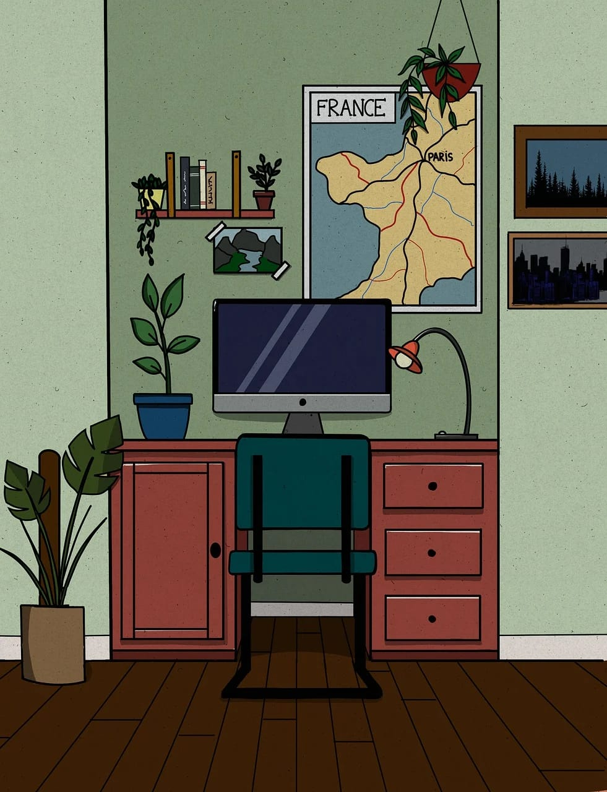
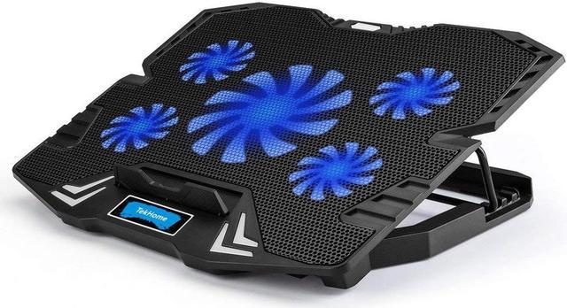
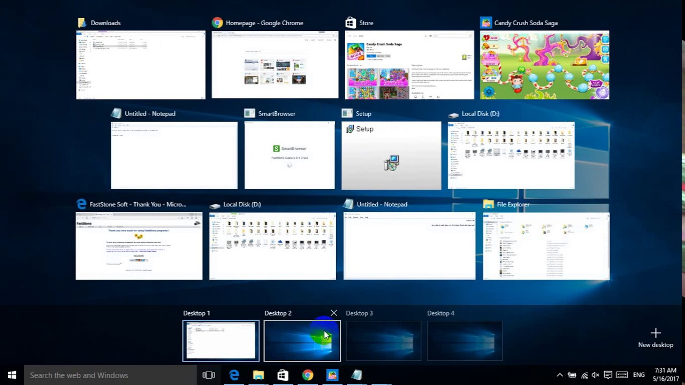
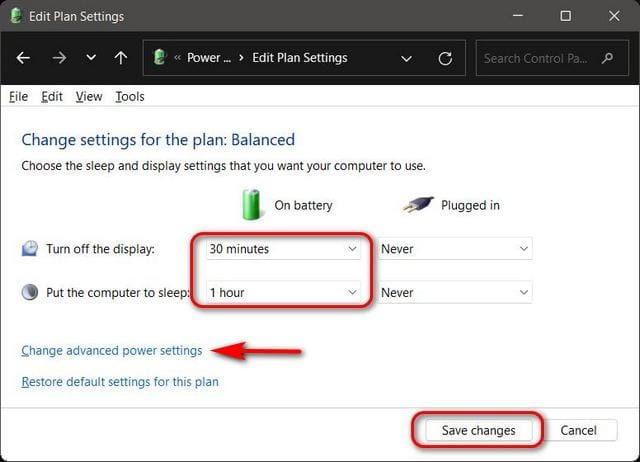
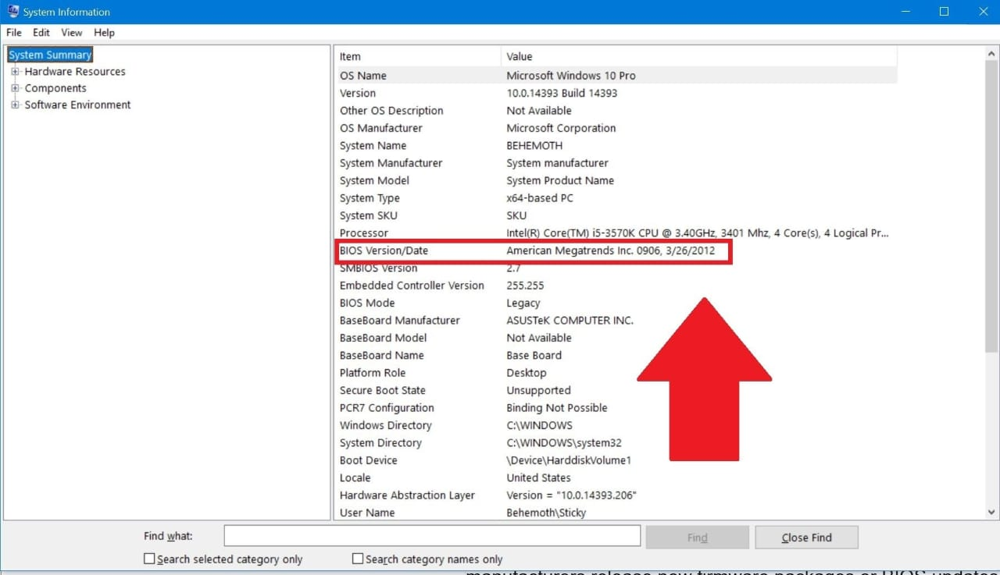
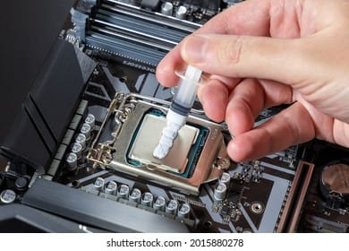
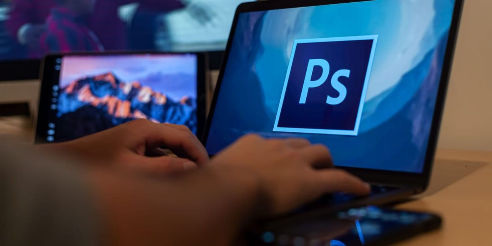

OVERHEATING TROUBLESHOOT
Overheating can be a serious issue for your device. Follow these steps to troubleshoot and resolve the problem. Check the following points for possible causes and solutions:
Laptop overheating can be a common issue, but there are simple solutions to help mitigate it. Here are some steps you can take to solve the problem of laptop overheating:
- 1. Ensure Proper Ventilation
Keep the vents clear: Ensure the air vents are not blocked by anything (like cushions or soft surfaces). Always use the laptop on a hard, flat surface to allow proper airflow.
Elevate the laptop: You can use a laptop stand or place the laptop on a cooling pad to improve airflow beneath it.  - 2. Use a Cooling Pad
Invest in a cooling pad: Laptop cooling pads come with built-in fans that help circulate air around the laptop, lowering the internal temperature.  - 3. Clean the Fans and Vents
Remove dust: Over time, dust can accumulate inside the laptop, blocking vents and causing overheating. Use compressed air to blow out the dust from vents and fans, or take it to a professional for cleaning.
- 4. Close Unnecessary Programs
Limit background processes: Running too many applications simultaneously can cause the laptop to work harder, leading to heat generation. Close unnecessary programs and avoid multitasking with heavy applications.
Check for malware: Malware can overload your system, causing overheating. Run a malware scan to ensure your system is clean.  - 5. Adjust Power Settings
Reduce performance settings: Lower your laptop's performance mode or power plan to "Balanced" or "Power Saver" mode, which can reduce the heat generated by the processor and graphics card.  - 6. Update Drivers and BIOS
Update system drivers: Ensure that your system drivers, especially for the graphics card and chipset, are up to date.
Update BIOS: Sometimes, manufacturers release BIOS updates that improve thermal management, so check if there’s an update available for your laptop model.  - 7. Replace Thermal Paste
Replace the thermal paste: Over time, the thermal paste between the CPU/GPU and the heat sink can dry out, reducing its effectiveness. If you're comfortable with hardware, you can replace it, or have a professional do it.  - 8. Use Lighter Workloads
Limit resource-heavy tasks: Avoid running heavy applications for extended periods, like video editing, gaming, or rendering on the laptop if it tends to overheat. 
Make sure to regularly clean dust from fans and vents, ensure proper ventilation, and consider using cooling pads if necessary. For more detailed instructions, refer to the troubleshooting guide provided.